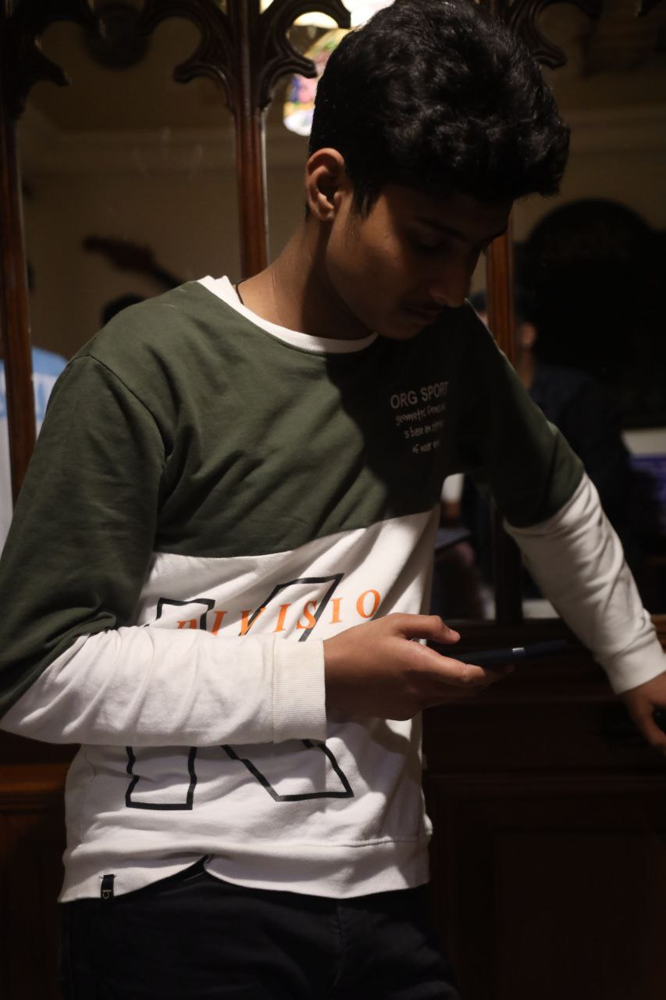

I am a data scientist with 4 months of work experience. I have handled various applications, websites, and data structures as well as quite a few databases. I am a college student but have been working on projects ever since 11th grade. I have also worked as an intern for Azure SQL Database.